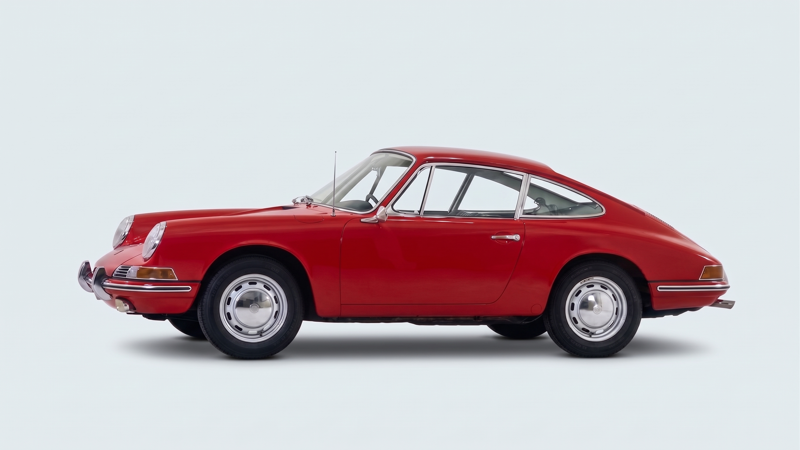
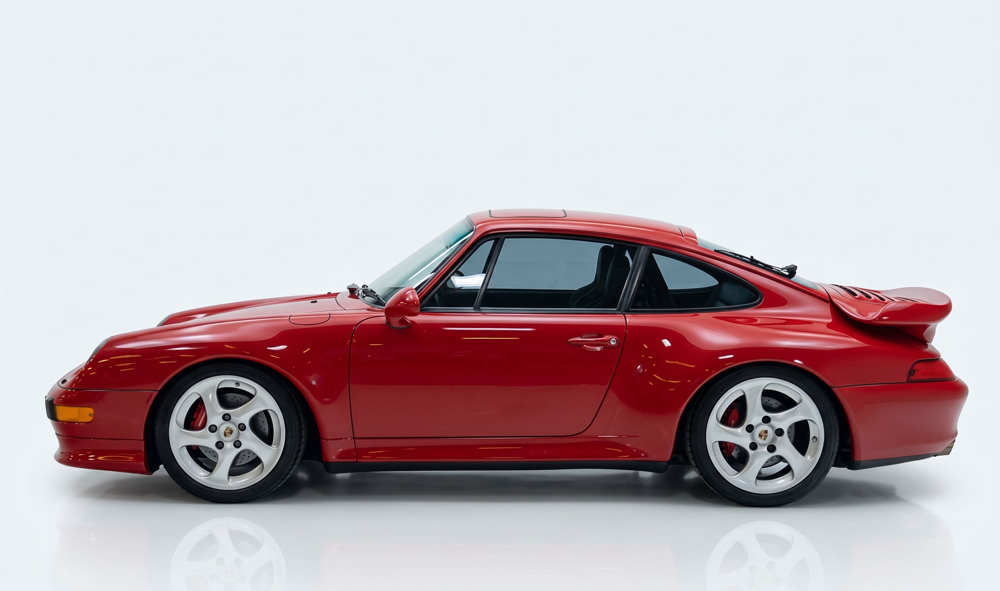
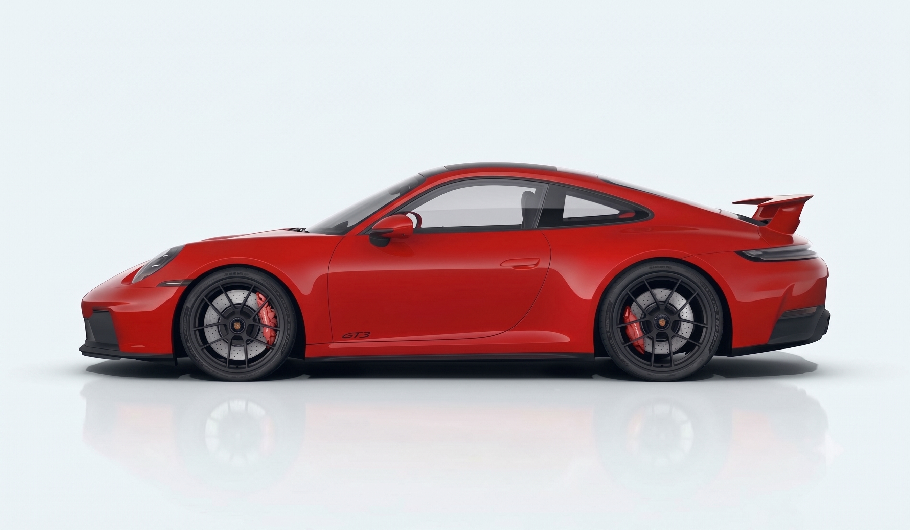

Roda
Conjunto de rodas de liga
leve com design derivado
do motorsport


)

Aceleração
de 0 a 100km/h
velocidade máxima
0CV
Conjunto de rodas de liga
leve com design derivado
do motorsport

Conjunto de rodas de liga
leve com design de cinco
raios de braço duplo
Toque nos cartões para descobrir

Motor boxer refrigerado a ar, a marca registrada dos primeiros 911
Faróis redondos e carroceria compacta, o desenho que define o modelo até hoje

Primeira geração do 911 com motor refrigerado a água
Faróis ovais, um visual bem diferente dos clássicos redondos

Painel totalmente digital e assistentes eletrônicos de condução
Aerodinâmica ativa, com elementos que se ajustam sozinhos conforme a velocidade
 01
01
Um dos primeiros 911 preparados exclusivamente para corrida, venceu provas de endurance e ajudou a construir a fama esportiva da marca.
 02
02
Criado para as 24 Horas de Le Mans, levou o 911 ao topo do automobilismo mundial com a vitória geral da prova em 1998.
 03
03
Referência no automobilismo de GT moderno, disputa provas de endurance ao redor do mundo até hoje.
 04
04
Base da Porsche Carrera Cup, é o carro que forma pilotos em categorias monomarca pelo mundo todo.